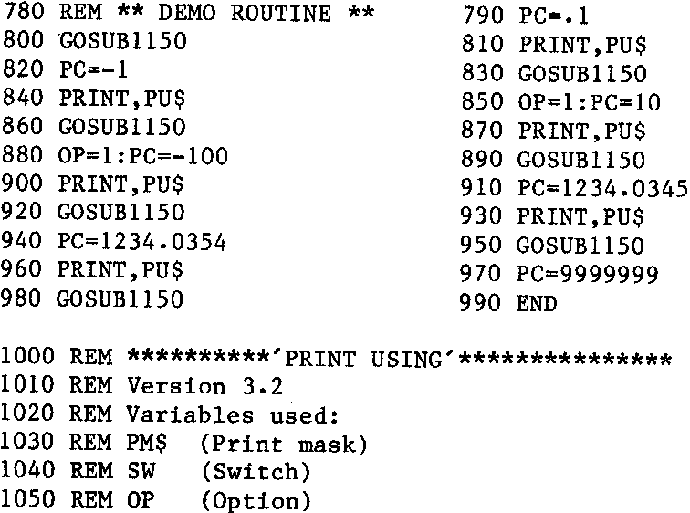

INMC 80 News |
September 1980 – January 1981 · Issue 2 |
| Page 50 of 59 |
|---|
| N/A | Printer handshake |
|---|---|
| A useful extra, saves a wasted 2708 or lots of typing. Works. From Basic, one Poke on, one Poke off. | |
| N/A | RINK |
| Supposed to scan the keyboard once and return with value if key pressed. I can’t get this to work ( but see above re. machine code !). | |
| .U,.X,.N | N/A |
| Activate U out, X out, Return to monitor respectively. Since I don’t understand Nas-Sys the first two are an unknown quantity for me. | |
The Henry’s format of “.<Command>” is a nuisance compared to the meaningful names of the other. Soon get used to it though. The Bits and P.C.’s has some strange features (not really bugs but with no info....)
Documentation of both is of the standard that we have come to expect, i.e. lousy. There seems small chance of gaining any comprehension of how either works, though the Henry’s information is slightly better.
Relative Advantages …I generally use the Bits and P.C.s toolkit since it is 1) in ROM and instantly available 2) uses no RAM space at all except in the work area. The Henry’s version eats 2K of expensive RAM. However, the price paid for this is that the Bits and P.C.s toolkit is very noticeably slower.Fair exchange ?
Are They Worth Buying ? Well, I don’t regret the money and wouldn’t want to lose either. However I would trade both for the following facilities comprehensively implemented in ROM: 1) Renumber, like the Henry’s 2) Find and optionally change 3) Append 4) Auto 5) Cross reference listing 6) Dump ....in that order, implemented using Keyboard repeat ( or use Nas-sys 3) The rest of the facilities are o.k. but Oh! for a find and optionally change.............
Please note: the author is a known Dodo; bear this in mind when buying either.
Below is a ‘PRINT USING’ routine, also from Mr.James Weatherson-Roberts.
| Page 50 of 59 |
|---|